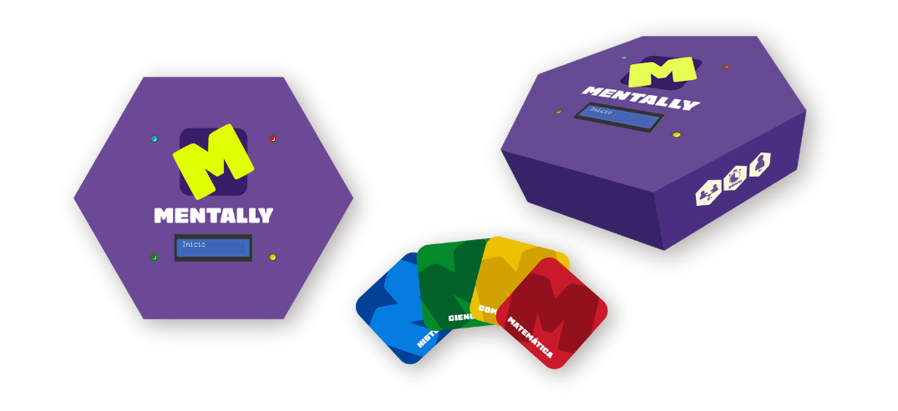

¿Quienes somos?
Los exámenes o simplemente aprender.

¡Aprende jugando!
Estudios afirman que la interacción con distintos juegos permite que la información se integre en la memoria de forma más significativa y duradera, debido al aumento de la atención, desarrollando asi las habilidades básicas
Nuestro objetivo

Brindar una experiencia educativa emocionante que fomente la participación activa, estimule habilidades cognitivas y contribuya al proceso educativo de manera significativa.
- © Derechos de autor Fiorella Sotelo R. 2023